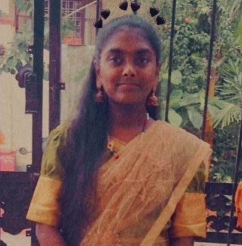

I am Jayanthi Jakkula, a passionate and dedicated B.Tech student with a strong interest in software development, web technologies, and problem-solving. I enjoy exploring new technologies and applying them to real-world applications.
From my early academic years, I developed a strong curiosity towards computers and technology. This curiosity motivated me to pursue engineering and deepen my understanding of programming and system design.
Throughout my B.Tech journey, I gained exposure to core technical subjects such as Data Structures, Operating Systems, DBMS, Computer Networks, and Software Engineering. These subjects strengthened my technical foundation and analytical thinking.
I believe in continuous learning, discipline, and consistency to grow as a successful professional in the software industry.
Bachelor of Technology (B.Tech)
Computer Science Engineering
JNTUH Institution
I enjoy web development, mobile application development, academic research, and continuous skill enhancement through hands-on projects and learning.
My long-term goal is to become a competent software engineer capable of designing, developing, and maintaining scalable and efficient software systems.
Public Transport Tracking mobile app using Flutter & backend services.
Web-based resume generator with templates and database storage.
Women-focused employment and learning platform concept project.
A blog platform where I share technical articles, learning experiences, and project tutorials using HTML, CSS, and JavaScript.
Email: jayanthijakkula1210@gmail.com
Phone: 8019480961
LinkedIn: Jayanthi Jakkula
Instagram: jayanthijakkula_5